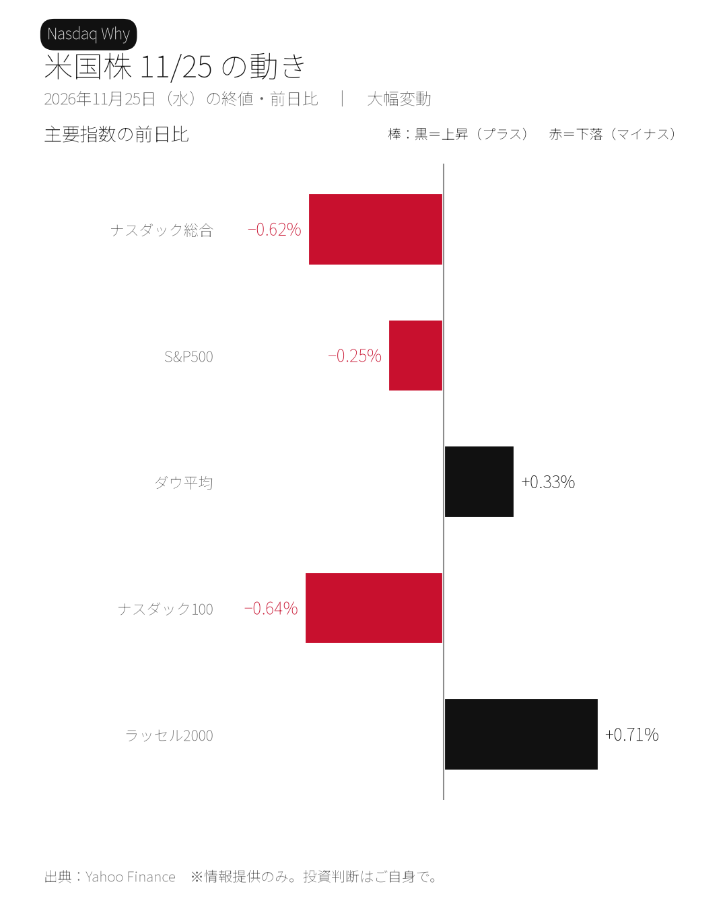
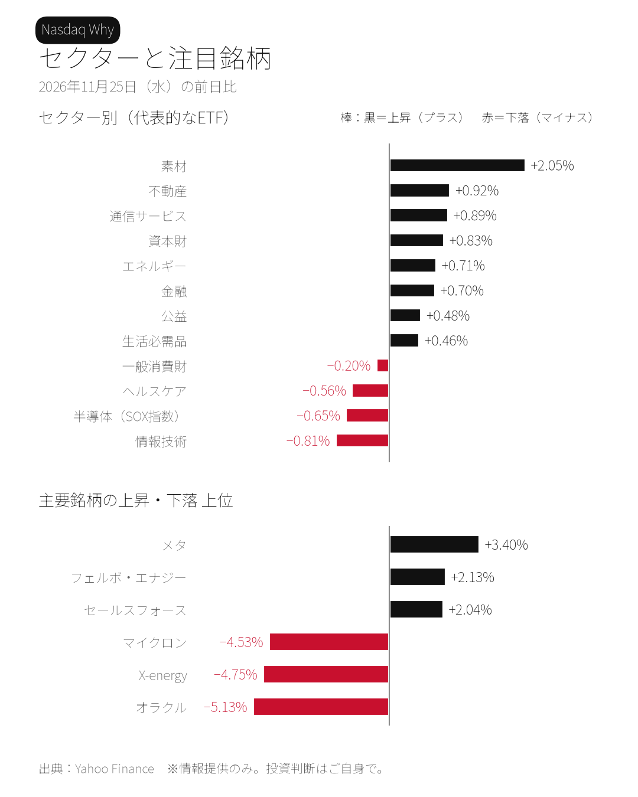

11/25の米国株：オラクル、資金確保でも株価はなぜ急落した？
2026年11月25日（水）の米国市場（日本時間の翌朝更新） ｜ 大幅変動
今日の疑問
オラクル、資金確保でも株価はなぜ急落した？
オラクルは-5.13%と大きく下げた。J.P.モルガンはOpenAI向け契約の資金確保を評価したが、同社のCDSは過去最高に上がり、AI投資の借金への不安が勝った。投資がいつ回収できるかはまだ分からず、次は信用市場の動きを確かめたい。

主要指数
| 名前 | 終値 | 前日比 | 騰落率 |
|---|---|---|---|
| ナスダック総合 | 23,585.80 | -147.74 | -0.62% |
| S&P500 | 7,182.78 | -18.31 | -0.25% |
| ダウ平均 | 50,182.95 | +164.25 | +0.33% |
| ナスダック100 | 26,046.90 | -167.27 | -0.64% |
| ラッセル2000 | 2,704.06 | +19.12 | +0.71% |
なぜ動いた？
- オラクルのCDS（倒産に備える保険料）が過去最高に上昇。AI投資を借金でまかなうことへの不安から、同社株が急落した（出典：Blockonomi、Seeking Alpha、Around Prague、The Economic Times）
- AIクラウド関連の売りが広がり、エヌビディアが半導体株の下げを先導した。CEO復帰よりもAIへの不安が重荷になった（出典：Yahoo Finance、24/7 Wall St.、CNN）
- トレンドフォースがDRAM価格の予想を引き下げた。マイクロンや韓国のSK hynixなどメモリー株が売られた（出典：TradingView、Chosunbiz、Techi）
深掘り：大きく動いた背景
AI関連株の売りが再び強まった。ナスダック総合は-0.62%、ナスダック100は-0.64%と下げた。売りの中心はオラクルで、株価は-5.13%と急落した。 きっかけは信用市場だ。シーキング・アルファによると、オラクルとコアウィーブのCDSが過去最高の水準に達した。CDSは企業の倒産に備える保険料にあたる。上がるほど、借金を返す力が疑われている。AIのデータセンター投資を借金でまかなう構図への不安が、株の売りにつながった。今月の増資に応じた投資家が含み損を抱えたとの指摘もある。 半導体株にも売りが広がった。CNNは、フアン氏のエヌビディア復帰よりもAIへの不安が勝ったと伝えた。エヌビディアは-3.91%。マイクロンは-4.53%と下げ、トレンドフォースによるDRAM価格見通しの引き下げも重荷になった。 別の見方もある。J.P.モルガンはOpenAI向け契約の資金が確保されたとして、オラクルの強気評価を据え置いた。ダウ平均は+0.33%、ラッセル2000は+0.71%と上げ、売りはAI関連に偏った。 まだ分からないのは、巨額の投資をいつ利益で回収できるかだ。CNBCによると、予想市場ではOpenAIの上場時期の見通しが後ろにずれた。次はCDSの水準と、FOMCでの金利判断を確かめたい。
セクター
情報技術は-0.81%、半導体（SOX指数）は-0.65%と下げた。素材は+2.05%と業種別で最も上げたが、明確な材料は見当たらない。不動産や資本財も買われた。
- 騰落率の高い順：素材 +2.05%、不動産 +0.92%、通信サービス +0.89%
- 騰落率の低い順：情報技術 -0.81%、半導体（SOX指数） -0.65%、ヘルスケア -0.56%

注目銘柄
オラクルは-5.13%。信用不安の指標の上昇が重荷だ。エヌビディアは-3.91%、マイクロンは-4.53%と半導体も売られた。アマゾンも-3.12%。メタは+3.40%と逆行高だが、明確な材料は見当たらない。
- 上昇：メタ（META）+3.40%、フェルボ・エナジー（FRVO）+2.13%、セールスフォース（CRM）+2.04%
- 下落：オラクル（ORCL）-5.13%、X-energy（XE）-4.75%、マイクロン（MU）-4.53%
半導体トピック
- トレンドフォースがDRAM価格の予想を引き下げ、NANDの値下がりも見込んだ（TradingView、Chosunbiz）
- AI需要の急増で、製造装置とパッケージ基板まわりで供給不足が起きている（KuCoin）
- DDR5・DDR4の価格高騰の中、年末商戦の値引き情報が出ている（Tom's Hardware、Tom's Hardware）
関連市場
| 名前 | 終値 | 前日比 | 騰落率 |
|---|---|---|---|
| 米10年債利回り | 4.848% | -0.056pt | ― |
| ドル円 | 159.20 | +0.19 | +0.12% |
| 金先物 | 3,599.60 | +37.70 | +1.06% |
| 原油先物(WTI) | 84.18 | +2.13 | +2.60% |
| ビットコイン | 60,269.84 | +522.07 | +0.87% |
米10年債利回りは4.848%に低下した（前日比-0.056ポイント）。ドル円は159.20円と円安方向。原油先物(WTI)は+2.60%、金先物は+1.06%、ビットコインは+0.87%と上げた。
今後の注目
- 12/9（水） FOMCの金融政策発表で示される金利の方向（公式発表）
- オラクルとコアウィーブのCDS（信用不安の指標）の行方（Seeking Alpha、The Economic Times）
- OpenAIの上場時期をめぐる予想市場の見方の変化（CNBC）
出典（見出し）
- Blockonomi：Oracle (ORCL) Stock Falls 8% as Credit Swaps Hit Record 356 Basis Points（記事）
- Seeking Alpha：AI credit risk mounts as CDS spreads for Oracle, CoreWeave hit record levels (ORCL:NYSE)（記事）
- Around Prague：Why Is Oracle Stock Down Today? Shares Fall 6.45% to $102.44 as AI Debt Fears Hit Tech（記事）
- The Economic Times：AI credit risk mounts as Oracle and CoreWeave hit record CDS spreads - AI stock sell-off adds to market fears: Could rising debt costs derail the massive AI boom?（記事）
- Yahoo Finance：Stock Market Today: Futures Plunge as AI Rout Resumes; Nvidia Leads Chip Stocks Lower, Anthropic Drops Further Below IPO Price（記事）
- 24/7 Wall St.：Nebius Plunges 12%, Oracle Sinks 8% as AI Cloud Selloff Deepens; IBM Rises 2%: Is IBM a Safer AI Play?（記事）
- CNN：Tech stock sell-off persists as AI fears outweigh Huang’s Nvidia return（記事）
- TradingView：MU, SKHY, SNDK Stocks In Focus After TrendForce Lowers DRAM Pricing Forecast（記事）
- Chosunbiz：DRAM price growth to slow as NAND prices fall in 2027, TrendForce says（記事）
- Techi：SK hynix falls 11% as Seoul gives back its chip rally after Micron’s slide（記事）
- KuCoin：Surging AI demand triggers equipment shortages in the semiconductor and advanced packaging substrate supply chain.（記事）
- Tom's Hardware：Best Black Friday RAM deals 2026 — discounts on DDR5 and DDR4 to beat the memory price crunch（記事）
- Tom's Hardware：RAM price tracking 2026 — price tracking on DDR5 and DDR4 memory of all capacities（記事）
- CNBC：Prediction markets push OpenAI IPO expectations later into 2027（記事）
データ：Yahoo Finance
📝 note でも読めます（図つき・まとめ）：note.com/nasdaqwhy